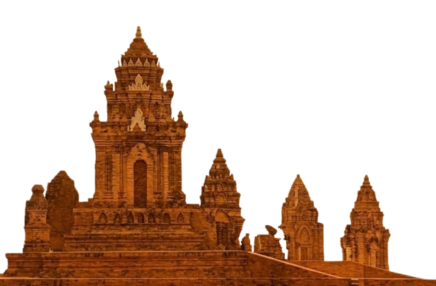
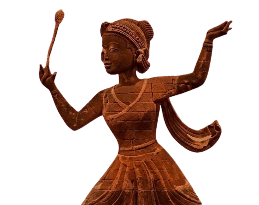

Hãy nhấp vào một yếu tố bạn muốn khám phá
 🛕 Tháp Chăm
🛕 Tháp Chăm
 🎭 Lễ hội
🎭 Lễ hội
 🧵 Dệt vải
🧵 Dệt vải
 🎶 Nghệ thuật múa nhạc Chăm
🎶 Nghệ thuật múa nhạc Chăm


Ngôn ngữ của người Chăm là tiếng Chăm, thuộc nhóm ngôn ngữ Malay–Polynesia (họ Nam Đảo), nằm trong hệ ngôn ngữ Austronesian.
Tiếng Chăm có lịch sử lâu đời, gắn liền với nền văn minh Champa cổ. Hiện nay, tiếng Chăm vẫn được sử dụng trong cộng đồng người Chăm, đặc biệt trong sinh hoạt hằng ngày, tín ngưỡng và lễ hội truyền thống.
Ngôn ngữ này có hai nhóm chính:
- Chăm Đông (Chăm Bàlamôn): chủ yếu ở Ninh Thuận, Bình Thuận.
- Chăm Hồi giáo (Chăm Islam): một phần chịu ảnh hưởng tiếng Mã Lai – Ả Rập trong tôn giáo.
Đời sống người Chăm không chỉ đơn thuần là những hoạt động sinh hoạt “ăn – mặc – ở” thường nhật, mà đó là một bản giao hưởng tuyệt đẹp giữa việc gìn giữ những giá trị truyền thống nghìn năm và sự thích nghi khôn ngoan với dòng chảy hiện đại. Mỗi nếp nhà, mỗi làng Chăm (Palei) đều chứa đựng những triết lý nhân sinh sâu sắc về sự gắn kết giữa con người và thần linh.
Gắn liền với hình ảnh những cánh đồng lúa bạt ngàn và tiếng thoi đưa lách cách bên khung dệt truyền thống. Đối với người Chăm, lao động không chỉ là cách để duy trì sinh kế mà còn là một hình thức thực hành văn hóa. Nghề dệt thổ cẩm Mỹ Nghiệp hay nghề gốm Bàu Trúc là minh chứng cho đôi bàn tay tài hoa, nơi mỗi sản phẩm làm ra đều mang hơi thở của đất mẹ và niềm tự hào dân tộc.
Trang phục Chăm là một biểu tượng kiêu hãnh của bản sắc. Những chiếc váy dài (Aw yau) thướt tha của phụ nữ, kết hợp cùng khăn đội đầu (Mát-ra) và dây thắt lưng thêu hoa văn tinh xảo, tạo nên vẻ đẹp kín đáo nhưng vô cùng quyến rũ. Màu sắc của trang phục không chỉ để làm đẹp mà còn phản ánh địa vị xã hội và các giá trị tín ngưỡng trong những dịp lễ hội thiêng liêng.
Ẩm thực Chăm là một hành trình khám phá vị giác đầy ấn tượng với sự kết hợp phong phú của các loại gia vị như nghệ, ớt, sả và cốt dừa. Chịu ảnh hưởng từ giao thoa văn hóa Ấn Độ giáo và Hồi giáo, các món ăn như Cà ri Chăm hay canh bồi không chỉ đậm đà hương vị mà còn tuân thủ nghiêm ngặt các quy tắc tôn giáo, thể hiện sự kính trọng đối với nguồn thực phẩm được ban tặng.
Người Chăm có tính cộng đồng cực kỳ cao, thể hiện qua sự gắn kết chặt chẽ giữa gia đình và làng xã. Trong xã hội truyền thống, vai trò của người phụ nữ (theo chế độ mẫu hệ) rất quan trọng trong việc quản lý gia đình và thờ cúng tổ tiên. Đời sống cá nhân luôn hòa mình vào dòng chảy chung của Palei, tạo nên một mạng lưới hỗ trợ lẫn nhau vô cùng bền vững qua bao thế hệ.
Tâm linh là mạch ngầm chảy xuyên suốt trong mọi hoạt động của người Chăm. Niềm tin vào thần linh và tổ tiên không nằm ở những điều xa vời mà hiện diện ngay trong từng bữa ăn, giấc ngủ hay khi bước chân ra đồng. Những ngôi tháp cổ kính không chỉ là di tích, mà là những "thực thể sống" nơi cộng đồng gửi gắm niềm tin về sự bình an, mùa màng bội thu và sự thịnh vượng.
Trong kỷ nguyên số, người Chăm không hề đứng yên. Thế hệ trẻ đang tích cực học tập, ứng dụng công nghệ để quảng bá văn hóa dân tộc ra thế giới. Sự hòa nhập xã hội diễn ra mạnh mẽ nhưng không làm mất đi "cái gốc" Chăm. Họ đang viết tiếp những trang sử mới bằng tri thức hiện đại nhưng vẫn mang trong mình tâm thế của những người con thừa kế vương quốc Champa rực rỡ năm xưa.
🛕 Tháp Chăm
🎭 Lễ hội
🧵 Dệt vải
🎶 Nghệ thuật múa nhạc Chăm

❌ Hiểu lầm: Người Chăm chỉ theo một tôn giáo
✅ Thực tế: Người Chăm tồn tại nhiều hệ tín ngưỡng như Bà La Môn, Bani và tín ngưỡng dân gian.
Chính sự đa dạng ấy tạo nên chiều sâu văn hóa đặc sắc.